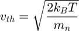
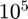
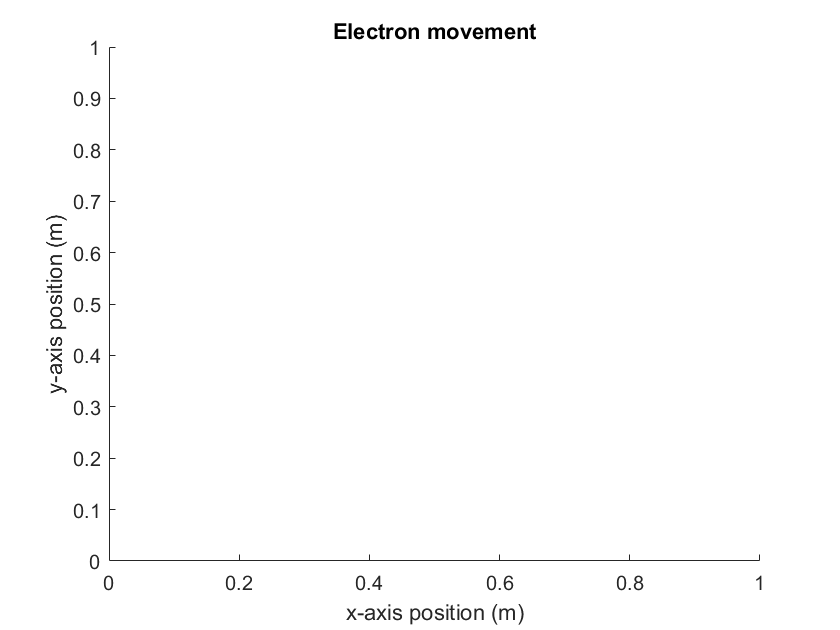
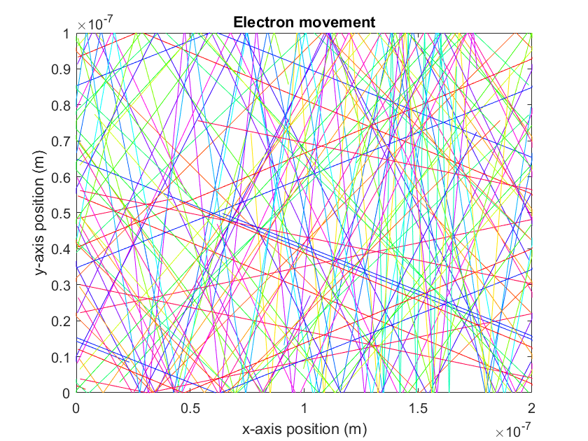
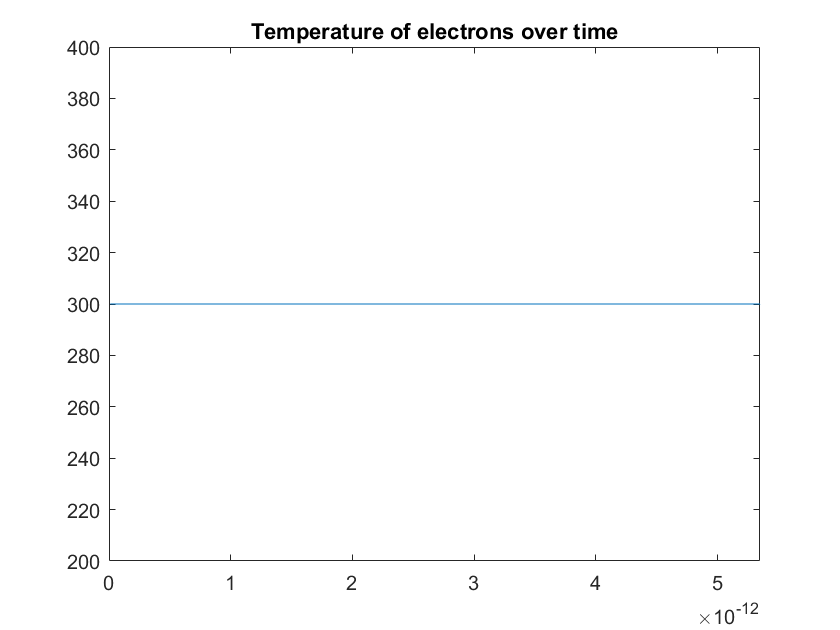

ELEC 4700 - Assignment 1 Part 1
Andrew Paul 100996250 The prupose of this code it to model electrons in an N-type silicon semiconductor. The first part of this assignment will populate a given region with a number of electrons (note that the number of electrons is set to 20 for the purpose of the 2D simulation movie but data is provided for 10000 electrons). The thermal velocity of each electron can be calculated using the following formula:

The mean time between collisions is given as 0.2ps, therefore the mean free path of the electrons can be calculated by multiplying the thermal velocity by the mean time between collisions. In this case the thermal velocity is constant as we set all the electrons to have the same velocity as the temperaure is constant at 300K. The Boltzmans constant and the value mn are listed in the constants in the code below as kB and mn respectivley. The thermal velocity was found to be 1.8697 x  m/s and the mean free path is found to be 37.394 nm. The plots of 2D electron trajectories and temperature of each electron over time are displayed after the code below.
% list of constants m0 = 9.11e-31; mn = 0.26*m0; kB = 1.38e-23; T = 300; %region limits xlim = 200e-9; ylim = 100e-9; % vth = sqrt(2*kB*T/mn); %initialize the number of electrons num_electrons = 20; % defining array for electrons (x postion, y position, angle, velocity) electron = zeros(num_electrons, 4); % the previous position of the electron (previous x position, previous y % position) electron_prev = zeros(num_electrons, 2); %spacial step should be smaller than 1/100 of region size time_step = xlim/vth/100; time_total = time_step*500; %num_step = time_total/time_step; % used to make each electron a different colour electron_colour = hsv(num_electrons); %counter used to check temperature is constant count = 0; %set an initial random postion and a fixed velocity for each electron for i=1:num_electrons for j=1:4 if(j==1) electron(i,j) = xlim*rand(); elseif(j==2) electron(i,j) = ylim*rand(); elseif(j==3) electron(i,j) = 2*pi*rand(); else electron(i,j) = vth; end end end % define a temperature and time array for plotting temperature= zeros(time_total/time_step,1); time = zeros(time_total/time_step,1); running_time = 0; % update each electrons positon for each time step for k=0:time_step:time_total for m=1:num_electrons % allows electrons to pass through to the other side of the region %in the x-direction if (electron(m,1) >= xlim) electron(m,1) = 0; electron_prev(m,1) = 0; elseif (electron(m,1) <= 0) electron(m,1) = xlim; electron_prev(m,1) = xlim; end % electrons are reflected at the same angle if they strike the limits % of the region in the y-driection if ((electron(m,2) >= ylim) || (electron(m,2) <= 0)) electron(m,3) = pi - electron(m,3); electron(m,4) = -electron(m,4); end %plot the movement of each electron if(k~=0) figure(1) plot([electron_prev(m,1),electron(m,1)],[electron_prev(m,2),electron(m,2)],'color',electron_colour(m,:)) axis([0 xlim 0 ylim]); end end title('Electron movement') xlabel('x-axis position (m)') ylabel('y-axis position (m)') hold on %UNCOMMENT THE LINE BELOW TO WATCH THE MOVIE %pause(0.001) %set the previous postion of the electron to the current electron %postion for the next itteration electron_prev(:,1) = electron(:,1); electron_prev(:,2) = electron(:,2); % set the electron postion to an updated position electron(:,1) = electron(:,1) + cos(electron(:,3)).*electron(:,4).*time_step; electron(:,2) = electron(:,2) + sin(electron(:,3)).*electron(:,4).*time_step; count = count +1; temperature(count,1) = (electron(1,4)^2)*mn/(2*kB); time(count,1) = k + time_step; end figure(2) plot(time,temperature) axis([0 time_total, 200 400]) title('Temperature of electrons over time') MFP = vth*0.2e-12;  